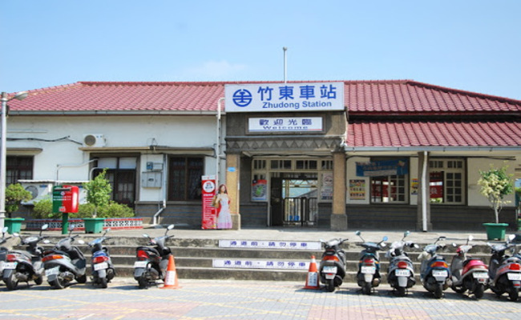
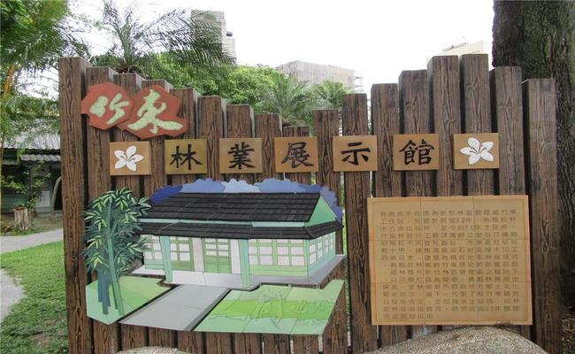
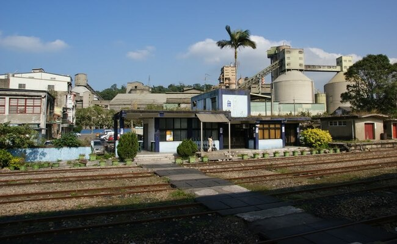
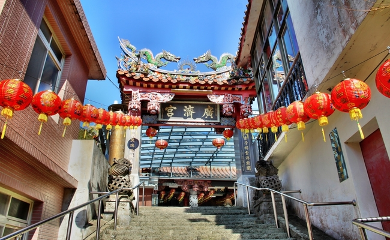
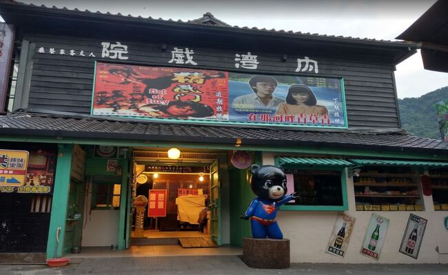
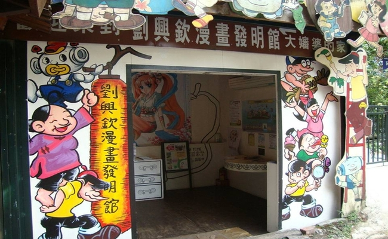

客庄文化休閒觀光導覽
報名由此去
一、六家水圳園區導覽
二、新埔小鎮文化導覽
三、關西小鎮文化導覽
四、大隘地區文化導覽
五、竹東客庄文化導覽
竹東地區文化導覽
竹東火車站

蕭如松文化園區
歷史沿革
籍貫為新竹縣北埔鄉的蕭如松老師（1922-1992），新竹師範畢業。早期接受日籍老師鹽月桃甫、有川武夫及李澤藩等人的指導與啟發，並秉持對藝術創作的熱忱，刻苦努力，卓然有成。 1946年定居竹東。教學剩餘時間都消磨在作品上，凡有機會展出，無不竭力參加，榮獲多次台陽美展、全國美展、青雲美展，吳三連文藝獎等大獎殊榮、作品為國立臺灣美術館等多單位典藏。 蕭如松藝術園區之設置，係為保存本縣已故前輩畫家蕭如松先生故居，活化並賦予空間再利用為宗旨。
建築描述
就外觀來看，屋頂形式是屬於日式的「入母屋造」屋頂。屋頂坡度短緩，上鋪日式的「日本瓦」，屋脊及垂脊的末端有「鬼瓦」；三角形山牆壁上有通風氣窗，以防止木造屋架受潮，山牆屋簷下端有「破風板」（封簷板），做為裝飾及防雨用。另外在迴廊的出簷則用紫銅皮屋頂，落水坡度較主屋稍緩。屋身牆面有三段，由上而下依序是：「真壁」(以木編抹灰牆做成的實牆)、木格氣窗、及「障子」(紙門)或「襖」（推拉門），而迴廊的外圍則全是木製玻璃格窗。
是否開放
是
植松木材林業文物館

篁城竹簾文化館

歷史沿革
九讚頭，一個客家地名；在台灣地圖上，根本找不著。它坐落在新竹縣一個窮鄉僻壤--橫山 鄉。走台三線，在關西和竹東之間，會經過橫山 ；它是通往後山--尖石鄉的門戶。「內灣吊橋 」是本鄉最具代表的風景名勝。內灣線火車穿越全鄉( 共有五個車站呢!)九讚頭，是橫山鄉的行政中心，只有一條街，人口不到二千人。
建築描述
九讚頭的市街，一、二十年來，幾乎沒什麼改變，空氣裡也嗅不到特別的氣息；每個人都像尋常台灣老百姓，汲汲營生。不過，這條不起眼的街，這幾年也常有熱鬧滾滾的時刻--無關神明廟會；也不是過年過節；有時是高水準的表演團體，下鄉來演出；有時是辦理有趣好玩的親子活動，甚至吸引大批外地人；這些活動，也不只是熱鬧好玩而已--這些，在目前所謂文化不利的鄉間，是很難享受到的。
其他資訊
待補
九讚頭社區

合興車站
歷史沿革
合興，舊稱「十分寮」，早期曾經是砍樟製腦的腦寮。後來因開採水泥廠而設站，車站以輸送水泥為主， 因此站務繁忙，曾經有十五名鐵路員工。民國八十八（1999年），台灣水泥廠停產後，合興車站就跟著沒落， 就成了無人的招呼站。車站房舍便寂寥於塵垢中。台鐵一度打算廢站，後來一對夫妻出面認養舊車站，於是 促成了合興車站的重生。
建築描述
岸式月台一座
其他敘述
待補
內灣廣濟宮

內灣老派出所
歷史沿革
在內灣火車站旁的山坡上有一棟日式的建築，那就是著名的內灣派出所。也是新竹縣歷史建築物。在日治前期內灣仍為漢人與原住民交界的地區，治安不佳，為了維持當地的和平，明治年間才有日本警察及「隘勇」這樣的武力組織維護治安。內灣派出所的前身為「南河部落振興會」，即是由居民成立類似自衛隊的組織，來維持內灣的治安，後來才成立派出所，並建立日式的辦公廳舍。為了方便管理，派出所選擇了視野最好的制高點，不但可免於水患，並可居高臨下控管整個內灣村，在鐵路完成後還兼以控管鐵路的安全。
建築描述
內灣派出所建物為一磚造基礎的木造平房，建築完全依照日本形式及工法來興建，屋頂覆以日式文化瓦，入口上方為唐破風造型，構造精簡而深具內涵，為新竹縣現存極少數仍保留完整的日式派出所之一，頗具保存價值。
其他資訊
待補
內灣戲院

內灣形象商圈
歷史沿革
內灣老街位於台灣新竹縣橫山鄉，當地居民以客家族群為主，近年來以懷舊的老街情懷包含了內灣車站、內灣戲院以及內灣吊橋等等成為新竹的觀光旅遊景點。昔日內灣老街是進出盛產林木及礦產的尖石山區的最主要道路，也因如此於50年代曾為內灣帶來許多的人潮，以中正路的街道為主向外發展至光復路、大同路、和平街、中山街及廣濟路等都曾是絡繹不絕的人潮，然而隨著林業及礦業的產業沒落，內灣的盛況也由嘈雜歸於平靜。
建築描述
內灣老街上的傳統街屋是當地獨特的景觀，房屋多以紅磚砌柱及地基後，再加以木板材料作為屋身、門窗及屋頂，再以合板瓦或日式文化瓦覆蓋於屋頂。
其他資訊
待補
劉興欽漫畫發明館
